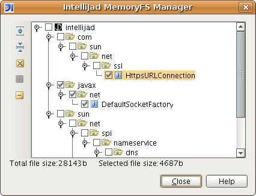

Memory VFS Manager
The memory VFS manager allows you to view and remove decompiled files from memory. It's accessible through the
Tools/IntelliJad menu.

Files can be viewed by expanding the tree, and selected by using the checkbox in each tree node. The checkbox
selection is hierarchical, so all nodes below the selected node are also selected/deselected depending on the state
of the current checkbox.
The manager has the following controls, situated to the left of the tree.
| Expand |
If a node is selected, expand it. If nothing is selected, expand the entire tree. |
| Collapse |
If a node is selected, collapse it. If nothing is selected, collapse the entire tree. |
| Delete |
Delete all selected files. |